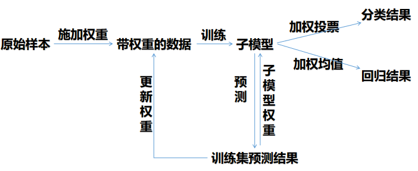

1. 什么是Bagging?
Bagging（bootstrap aggregating）是通过结合几个模型降低泛化误差的技术。 主要想法是分别训练几个不同的模型，然后让所有模型表决测试样例的输出。 这是机器学习中常规策略的一个例子，被称为模型平均（model averaging）。 采用这种策略的技术被称为集成方法。
2. 为什么Bagging有效？
模型平均奏效的原因是不同的模型通常不会在测试集上产生完全相同的误差。
假设我们有个回归模型。 假设每个模型在每个例子上的误差是，这个误差服从零均值方差为且协方差为的多维正态分布。
[warning] [?] 这一段看不懂
这一段没看懂。
理解1：代表第i个模型在所有样本上的误差，因此是一个向量，向量是元素个数为样本数。
理解2：代表第i个模型在某个样本上的误差 ，因此是一个数。
不管怎么理解都解释不通。
多维正态分布
通过所有集成模型的平均预测所得误差是。
[success]
所有模型对同一个样本做预测并取平均值会得到“所有集成模型在一个样本上的平均误差”。
“所有集成模型的平均预测误差”是指每个样本上的“所有集成模型在一个样本上的平均误差”组成的向量。
集成预测器平方误差的期望是
[success] 上面这个公式只能理解一部分：
这一步的原理是：
在误差完全相关即的情况下，均方误差减少到，所以模型平均没有任何帮助。
[warning] 为什么“误差完全相关”即c=v?
在错误完全不相关即的情况下，该集成平方误差的期望仅为。 这意味着集成平方误差的期望会随着集成规模增大而线性减小。 换言之，平均上，集成至少与它的任何成员表现得一样好，并且如果成员的误差是独立的，集成将显著地比其成员表现得更好。
3. 怎样集成？
不同的集成方法以不同的方式构建集成模型。 例如，集成的每个成员可以使用不同的算法和目标函数训练成完全不同的模型。 Bagging是一种允许重复多次使用同一种模型、训练算法和目标函数的方法。
具体来说，Bagging涉及构造个不同的数据集。
每个数据集从原始数据集中重复采样构成，和原始数据集具有相同数量的样例。
这意味着，每个数据集以高概率缺少一些来自原始数据集的例子，还包含若干重复的例子（如果所得训练集与原始数据集大小相同，那所得数据集中大概有原始数据集的实例）。
[success]
每个样本都是从全部的原始样本中随机采用的。
最后用于训练的样本的样本数与原始样本数相同，但内容不同。
有的原始样本不在训练样本中，有的原始样本在训练样本中出现多次。
模型在数据集上训练。
每个数据集所含样本的差异导致了训练模型之间的差异。
图7.5是一个例子。
[info] 图7.5 描述Bagging如何工作的草图。 假设我们在上述数据集（包含一个8、一个6和一个9）上训练数字8的检测器。 假设我们制作了两个不同的重采样数据集。 Bagging训练程序通过有放回采样构建这些数据集。 第一个数据集忽略9并重复8。 在这个数据集上，检测器得知数字顶部有一个环就对应于一个8。 第二个数据集中，我们忽略6并重复9。 在这种情况下，检测器得知数字底部有一个环就对应于一个8。 这些单独的分类规则中的每一个都是不可靠的，但如果我们平均它们的输出，就能得到鲁棒的检测器，只有当8的两个环都存在时才能实现最大置信度。
4. 怎样生成不同的模型？
神经网络能找到足够多的不同的解，意味着他们可以从模型平均中受益(即使所有模型都在同一数据集上训练)。 神经网络中随机初始化的差异、小批量的随机选择、超参数的差异或不同输出的非确定性实现往往足以使得集成中的不同成员具有部分独立的误差。
5. 其它集成方法
模型平均是一个减少泛化误差的非常强大可靠的方法。 在科学论文中比较算法的表现时，它通常是不鼓励使用的，因为任何机器学习算法都可以从模型平均中大幅获益（以增加计算和存储为代价）。
机器学习比赛中的取胜算法通常是使用超过几十种模型平均的方法。 最近一个突出的例子是Netflix Grand Prize。
不是所有构建集成的技术都是为了让集成模型比单一模型更加正则化。 例如，一种被称为Boosting的技术构建比单个模型容量更高的集成模型。
[success]
boosting
正则化是解决过拟合问题。提高模型容量是解决欠拟合问题。
通过向集成逐步添加神经网络，Boosting已经被应用于构建神经网络的集成。 通过逐渐增加神经网络的隐藏单元，Boosting也可以将单个神经网络解释为一个集成。
[success] bagging VS boosting
bagging:
boosting:

区别1： 样本
bagging: 样本有放回取样，样本权重不变
boosting: 不取样，使用所有样本，每一轮会调整样本权重。
区别2：分类器
bagging：每个分类器权重相等。虽然在做最终决策时也有加权，但那是基于分类器对这个样本的确定度的加权。对分类器本身是没有偏见的。
boosting：每个分类器生成以后，根据它在训练样本上的正确率得到一个针对分类器的权重。权重影响它的最终决策中的话语权。
区别3：训练过程
bagging：每个分类器是各自独立的，可以并行计算
boosting：样本权重 --- 分类器 --- 样本权重 --- 分类器。。。这是一个串行的过程
区别4：集成的目的
bagging：将一组过拟合的分类器集成成一个泛化能力强的分类器
boosting：将一组弱分类器拟合成一个强分类器。
弱分类器可以是各种算法。例如ML中的决策树：
bagging + 决策树 = 随机森林
boosting + 决策树 = 提升树
gradient + 决策树 = GDBT[?]